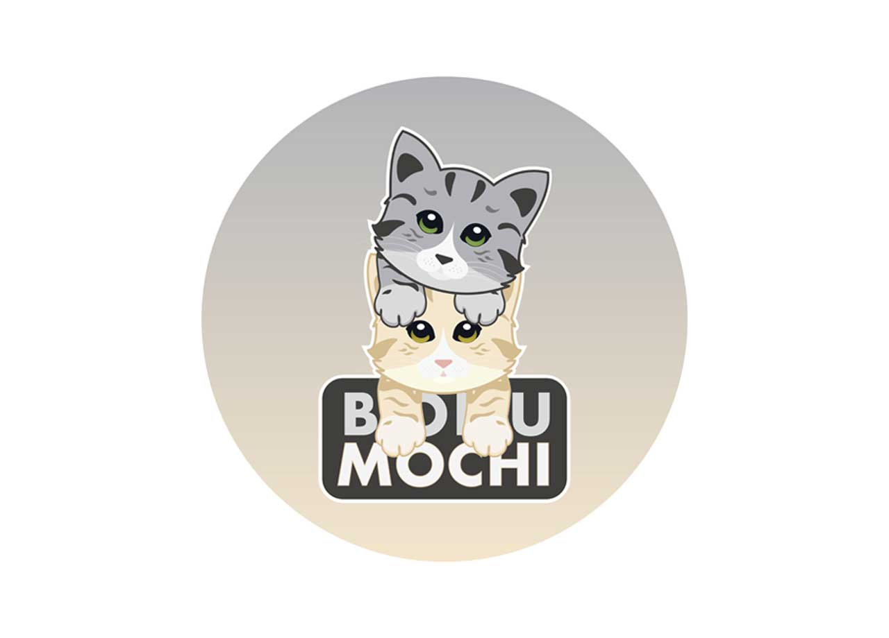
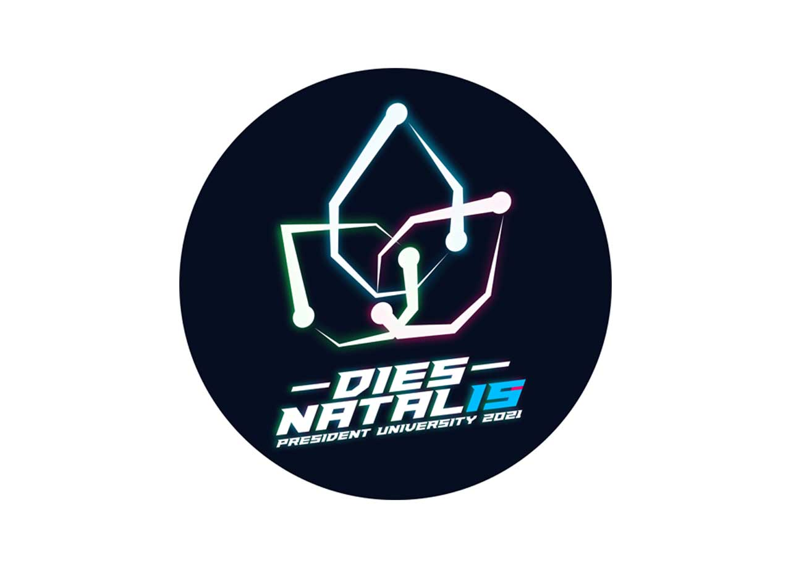
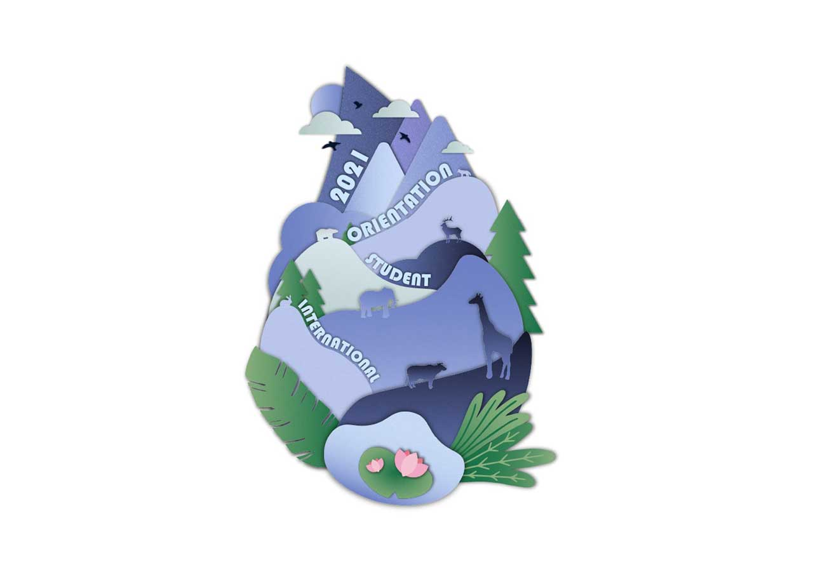
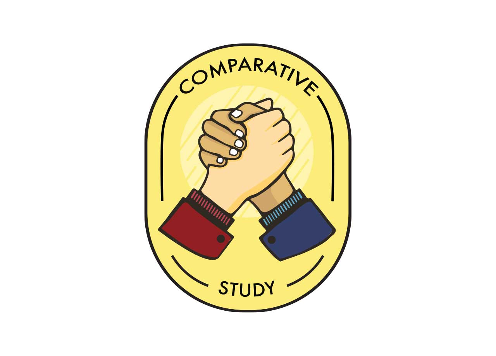
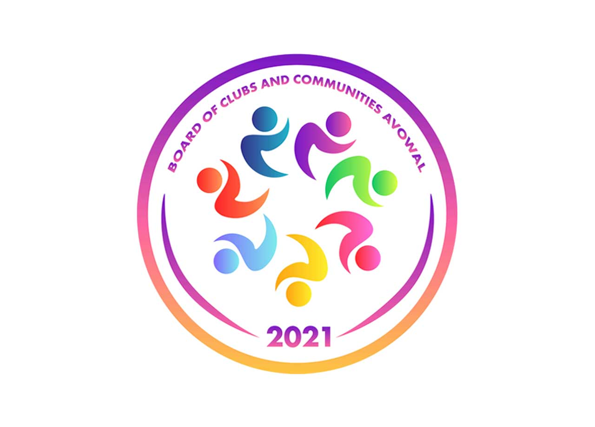

Graphic design / Logos
Logo Design
A collection of mascot, event, and emblem-style logo designs.
Selected Visuals





Graphic design / Logos
A collection of mascot, event, and emblem-style logo designs.




